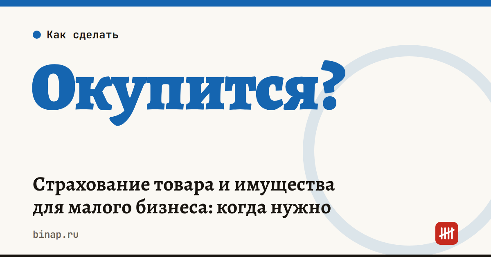

Страхование товара и имущества для малого бизнеса: когда нужно

Страховать товар и имущество стоит, когда одна потеря — пожар, затопление, кража, порча на складе — остановит бизнес или съест прибыль за несколько месяцев. Если потерю вы спокойно покроете из оборота, полис может не окупиться. Решение лучше принимать по расчёту, а не по рекламе страховщика.
Коротко
- Страхуют обычно товар на складе и в пути, оборудование, отделку и мебель арендованного помещения, а также ответственность перед соседями и клиентами.
- Главный вопрос — сколько вы потеряете в худшем случае и сможете ли покрыть это сами.
- Читайте исключения и франшизу: именно они решают, заплатят ли вам.
- Селлерам маркетплейсов: товар на складе площадки ваш, и риск его потери — тоже ваш, если площадка его не страхует.
Сроки, изменения и разборы для ИП и самозанятых — каждое утро в Telegram и MAX. Подпишитесь, чтобы не пропустить.
Что можно застраховать
| Объект | От чего страхуют обычно | Кому особенно нужно |
|---|---|---|
| Товар на складе | пожар, залив, кража, порча | магазинам, оптовикам, селлерам |
| Товар в пути | повреждение и утрата при перевозке | тем, кто возит сам или через перевозчиков |
| Оборудование и техника | поломка, пожар, кража | кафе, мастерским, производствам |
| Отделка и мебель в арендованном помещении | пожар, залив | всем, кто вложился в ремонт чужого помещения |
| Ответственность | ущерб соседям, клиентам, арендодателю | кафе, салонам, мастерским |
Набор рисков и условия у страховщиков разные — сравнивайте по одинаковому списку.
Окупится ли полис: как посчитать
- Посчитайте стоимость имущества под риском: средний остаток товара, оборудование, вложения в ремонт.
- Прикиньте худший сценарий: сколько денег уйдёт на восстановление и сколько недель бизнес не будет работать.
- Сравните с годовой стоимостью полиса и франшизой — суммой, которую в любом случае платите сами.
Расчёт редакции: средний остаток товара — 1 500 000 ₽, полис обходится, условно, в 1% от суммы — 15 000 ₽ в год, франшиза — 30 000 ₽. При пожаре или краже вы получите до 1 470 000 ₽ вместо нуля. Если такую потерю вы не покроете из оборота за 2–3 месяца, полис стоит своих денег.
Что проверить в договоре
| Пункт | Почему важно |
|---|---|
| Список рисков | «от всех рисков» почти всегда имеет исключения |
| Исключения | например, товар без документов, хранение с нарушениями, отдельные причины ущерба |
| Франшиза | её вычтут из каждой выплаты |
| Как определяют стоимость товара | по закупке, по документам или по рознице |
| Документы для выплаты | накладные, инвентаризация, акты — их нужно хранить заранее |
| Сроки заявления о случае | опоздание может стать причиной отказа |
Селлерам маркетплейсов
Товар на складе маркетплейса остаётся вашим, а программы страхования у площадок появляются и закрываются: например, Ozon закрыл страхование товаров продавцов с 13 октября 2026 года — подробнее в статье Ozon отключает страхование товаров. Узнайте у страховщика, принимает ли он на страхование товар на складах площадок, и держите акты приёмки и отчёты об остатках: без них не докажете ни стоимость, ни количество.
Что сделать
- Посчитайте стоимость товара и оборудования под риском.
- Выпишите 3–4 главных риска для вашего бизнеса.
- Запросите предложения у 2–3 страховщиков по одному и тому же списку рисков и сравните итог с франшизой.
- Соберите документы, которые понадобятся для выплаты, ещё до страхового случая.
Для самого предпринимателя есть отдельная страховка — на случай болезни: как получать больничные ИП, разобрали в статье добровольное страхование ИП в СФР.
Частые вопросы
Обязательно ли малому бизнесу страховать имущество? Как правило, нет. Но страховку могут потребовать банк при кредите или лизинге, а также арендодатель по договору аренды.
Можно ли учесть страховку в расходах? На УСН «доходы минус расходы» и на общей системе расходы на добровольное страхование имущества, которое используется в бизнесе, можно учесть при соблюдении условий НК — уточните у бухгалтера. На УСН «доходы» расходы не уменьшают налог.
Что делать, если страховщик отказал в выплате? Запросите письменный отказ с причиной, сверьте её с договором и правилами страхования. Если не согласны — направьте страховщику претензию, а затем можно обращаться в суд.